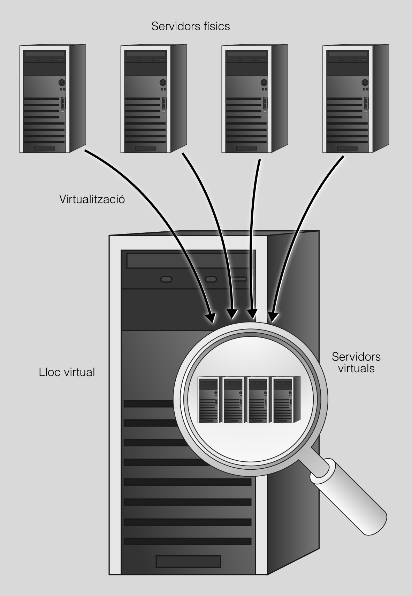

6. Servidors virtuals
Quan parlem de la creació de llocs virtuals ens estem referint a l’acció de fer treballar més d’un lloc web, per exemple, les pàgines web www.web1.cat i www.web2.cat en un únic ordinador.
Tal com mostra la figura següent tot i que tots dos dominis estiguen treballant en la mateixa màquina física, mai no ens n’adonarem quan visitem aquests llocs web.

Els llocs web virtuals es poden basar tant en adreces d'Internet (IP), on cada lloc web té una adreça d'Internet (IP) diferent, com en noms diferents, és a dir, diversos llocs web amb diferents noms de domini estaran treballant amb una única adreça d'Internet (IP). Val a dir que, tot i que estiguem treballant en la mateixa màquina física, com a usuaris observarem que l'usuari, quan visita aquests llocs web, no se n'adona.
Per explicar la tècnica de la creació de llocs web virtuals, treballarem amb dos exemples: www.aplicacionsweb.org i www.serveisenxarxa.org.
Els dos llocs webs virtuals seran servits pel mateix servidor web. El directori per defecte on es troben les pàgines web és /var/www, on crearem les diferents estructures de directori. Per tant, dins dels directoris /var/www/aplicacionsweb i /var/www/seveisenxarxa trobarem els arxius dels llocs web corresponents a les pàgines web anteriors.
Per a la configuració i posada en marxa dels llocs web virtuals hem de construir, en primer lloc, l'estructura de directoris on desarem els llocs. Utilitzarem dintre del directori reservat a cada lloc web la carpeta de public_html per allotjar els arxius del lloc web.
Un cop definits els directoris on desarem els llocs web virtuals, haurem d’adreçar-nos al directori /etc/apache2, on trobarem els arxius de configuració d’Apache. En aquest cas, l'arxiu principal de configuració és apache2.conf.
Considerant que per treballar amb els llocs virtuals haurem de fer alguns canvis en el contingut de l’arxiu, haurem de considerar, abans d'establir cap canvi, quina configuració de llocs web virtuals volem crear, és a dir, llocs virtuals basats en adreces d’Internet (IP) o bé basats en noms.
Servidors virtuals en Apache
Apache2 es lliura amb una configuració predeterminada virtual-host-friendly. És a dir, està configurat amb un únic host virtual predeterminat (utilitzant la directiva VirtualHost) que es pot modificar o utilitzar com si tingués un sol lloc o que s'utilitzés com a plantilla per a servidors virtuals addicionals si teniu diversos llocs. Si es deixa sol, l'amfitrió virtual predeterminat servirà com a lloc predeterminat o els usuaris del lloc veuran si l'URL que introduïu no coincideix amb la directiva ServerName de cap dels vostres llocs personalitzats. Per modificar el servidor virtual predeterminat, editeu el fitxer /etc/apache2/sites-available/000-default.conf.
Si voleu configurar un nou host virtual o lloc, copieu aquests fitxers en el mateix directori amb el nom que seleccioneu. Per exemple:
sudo cp /etc/apache2/sites-available/000-default.conf /etc/apache2/sites-available/elmeullocweb.conf
La configuració per defecte és la següent:
<VirtualHost *:80>
# The ServerName directive sets the request scheme, hostname and port that
# the server uses to identify itself. This is used when creating
# redirection URLs. In the context of virtual hosts, the ServerName
# specifies what hostname must appear in the request's Host: header to
# match this virtual host. For the default virtual host (this file) this
# value is not decisive as it is used as a last resort host regardless.
# However, you must set it for any further virtual host explicitly.
#ServerName www.example.com
ServerAdmin webmaster@localhost
DocumentRoot /var/www/html
# Available loglevels: trace8, ..., trace1, debug, info, notice, warn,
# error, crit, alert, emerg.
# It is also possible to configure the loglevel for particular
# modules, e.g.
#LogLevel info ssl:warn
ErrorLog ${APACHE_LOG_DIR}/error.log
CustomLog ${APACHE_LOG_DIR}/access.log combined
# For most configuration files from conf-available/, which are
# enabled or disabled at a global level, it is possible to
# include a line for only one particular virtual host. For example the
# following line enables the CGI configuration for this host only
# after it has been globally disabled with "a2disconf".
#Include conf-available/serve-cgi-bin.conf
</VirtualHost>
# vim: syntax=apache ts=4 sw=4 sts=4 sr noetUna vegada realitzats els canvis activarem en lloc web amb el comandament a2ensite:
#a2ensite elmeullocwebDesprés carregarem de nou la configuració d'Apache2 amb el comandament:
#service apache2 reload
Per a la depuració d'error en els arxius de configuració de llocs virtuals cal utilitzar:
#apache2ctl -tLlocs virtuals basats en l’adreça d’Internet (IP)
En aquest cas, podrem allotjar múltiples dominis en una única màquina que disposarà de diferents adreces d’Internet (IP) i, en cadascuna d’elles, s’hi executarà un lloc virtual.
Haurem de canviar la directiva <VirtualHost *:80> de forma que s'especifique a quina adreça IP ha de respondre. Per exemple <VirtualHost 192.168.2.112:80> si ha de respondre a l'adreça IP 192.168.2.112.
<VirtualHost 192.168.2.112:80>
DocumentRoot "/var/www/serveisenxarxa/public_html"
</VirtualHost>Llocs virtuals basats en el nom de domini
El problema dels llocs web virtuals basats en adreces d’Internet (IP) és que, considerant que s'allotgen molts dominis, necessitarem una adreça d’Internet (IP) per a cadascun dels dominis. Per tant, pot ser preferible treballar amb llocs virtuals basats en noms. En aquest cas, després de copiar l'arxiu de configuració per defecte, haurem d'afegir la directriu ServerName donat que, si bé els llocs virtuals es troben en la mateixa IP, s'ha de canviar el nom per a cadascun dels llocs. En el cas de treballar amb servidor DNS, aquest haurà d'estar configurat per resoldre aquests llocs en les zones corresponents. I la directiva DocumentRoot per a indicar des de quin directori es serviran les pàgines. Aquesta seria la configuració per a lloc www.serveisenxarxa.org:
<VirtualHost *:80>
ServerName www.serveisenxarxa.org
DocumentRoot "/var/www/serveisenxarxa/public_html"
</VirtualHost>Finalment, per verificar que tots els canvis aplicats han tingut èxit, tornarem a arrencar el servidor web.
Llicenciat sota la Llicència Creative Commons Reconeixement CompartirIgual 4.0